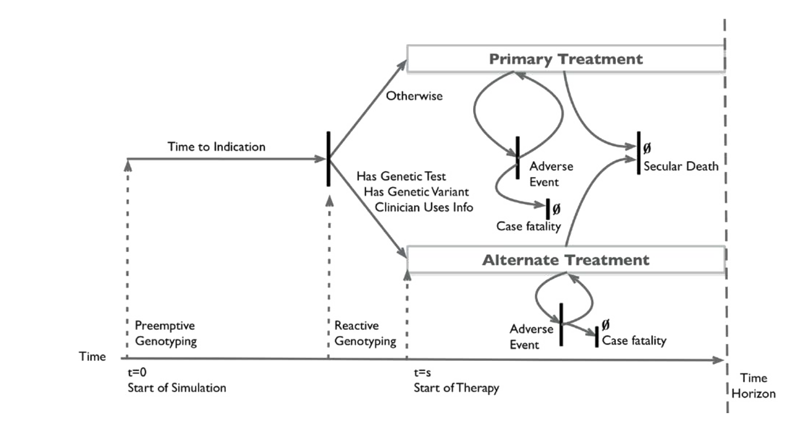

Discrete Event Simulation with Resource Constraints
Overview of Discrete Event Simulation
Discrete event simulation. DES can also incorporate the timing and interdependency of events.6,14,15 Although its origins are in industrial engineering and operations research, DES is increasingly used in health technology assessments.3,5,14–16 DES models are similar to microsimulation models in that they simulate individual patient trajectories. As such, they can also be computationally demanding. One advantage, however, is that DES extends the flexibilities of microsimulation. For example, a DES model can allow the probability of some future event to depend on the time spent in a given state. In addition, DES models can more easily incorporate interdependencies in the tim- ing of events and/or restrictions on available resources based on queuing or other constraints. An additional advantage is that DES models the timing of events and, unlike microsimulation, does not cycle through time peri- ods when no events occur. These advantages afford DES more modeling flexibility and computational efficiency.
(Quelle: Wikipedia)
{kind=link}
Overview of Decision Problem
We build on an existing progressive disease model in which healthy individuals develop a disease with two health states (“Sick” and “Sicker”; Alarid-Escudero et al. (2023)). Individuals can also transition to an absorbing death state due to causes unrelated to the disease (i.e., “background” mortality), or due to disease-specific causes. state transition diagram is shown in Figure 1. In the figure, nodes are health states and edges depict transitions among them. Edge labels are defined in terms of transition intensities (rates). Other key model parameters are summarized in ?@tbl-params.
We next convert this to a petri net diagram. A Petri net diagram is a mathematical modeling language used to represent distributed systems. It’s a type of directed bipartite graph with two types of nodes:
- Places (usually drawn as circles) - represent conditions or states
- Transitions (usually drawn as rectangles or bars) - represent events or actions
These nodes are connected by directed arcs (arrows), and places may contain tokens (typically drawn as black dots) that represent resources or control flow.
